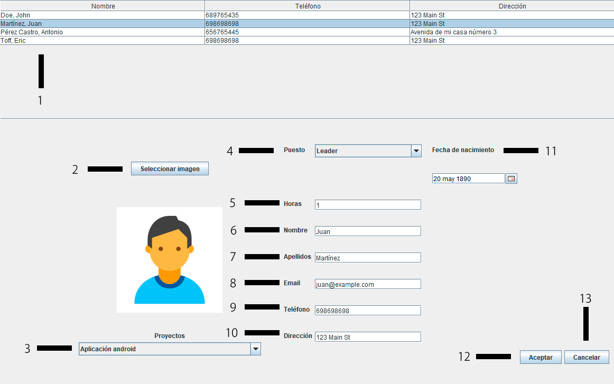

Actualizar Trabajador
En la página principal encontrarás diferentes campos de texto mostrados en la siguiente imagen:

1.- Tabla con los trabajadores registrados, al seleccionar uno, los datos de este se cargarán en el formulario activando los campos.
2.- Botón para cambiar la imagen en caso de desear cambiarla.
3.- Proyectos en los que está trabajando actualmente.
4.- Puesto en el proyecto que está seleccionado actualmente.
5.- Horas semanales que tiene asignadas el trabajador seleccionado en el proyecto seleccionado.
6.- Nombre del trabajador.
7.- Apellidos del trabajador.
8.- Email del trabajador (puede dejarse vacío en caso de que ya no tenga acceso al correo).
9.- Teléfono móvil del trabajador.
10.- Dirección del trabajador
11.- Fecha de nacimiento del trabajador.
12.- Botón para aceptar los cambios y realizar la actualización del trabajador seleccionado.
13.- Botón para cancelar la actualización y salir de esta ventana.